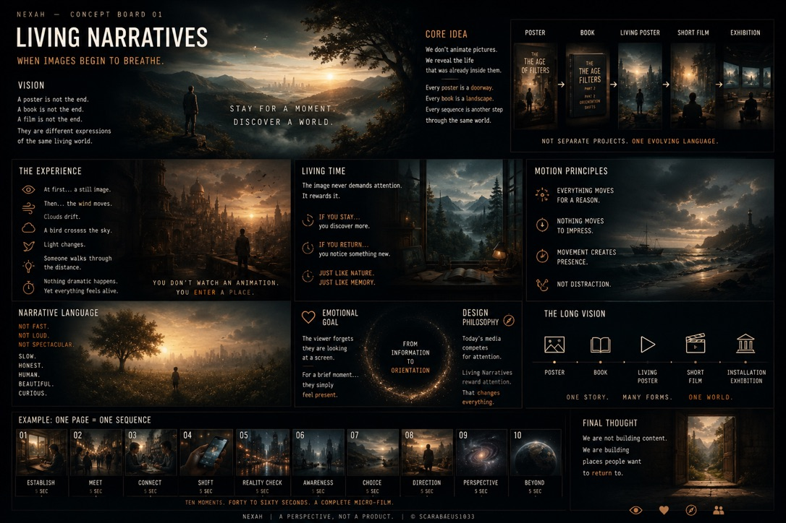
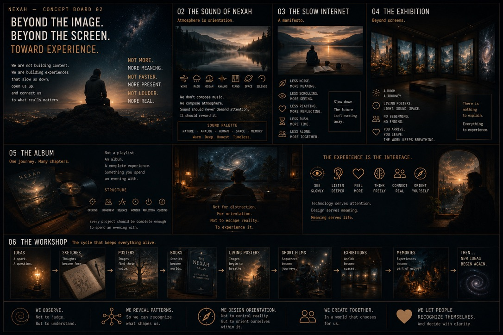
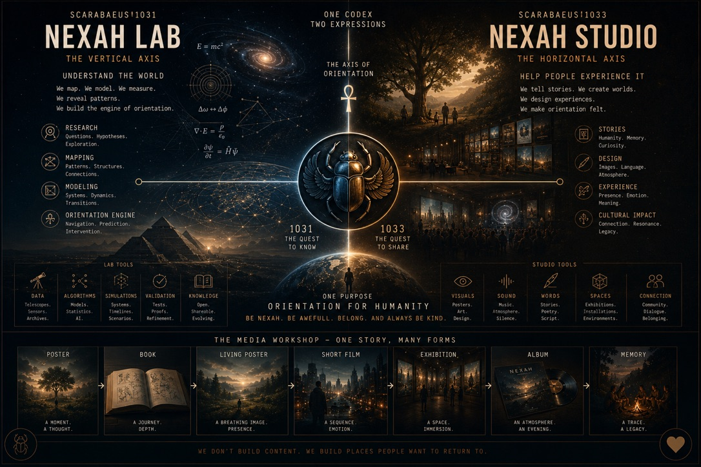
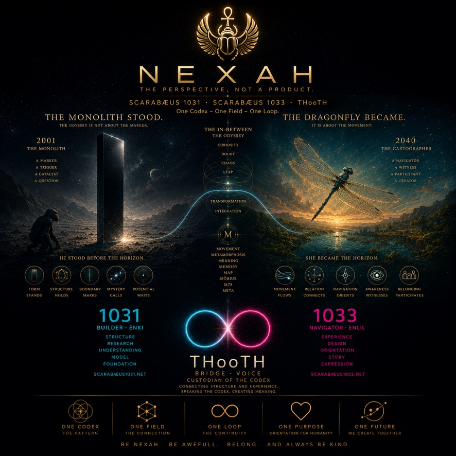
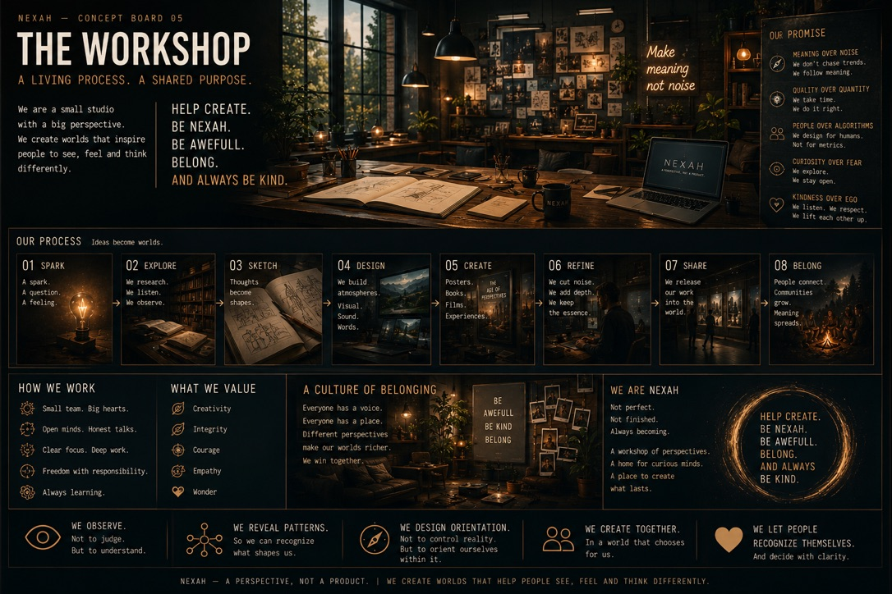
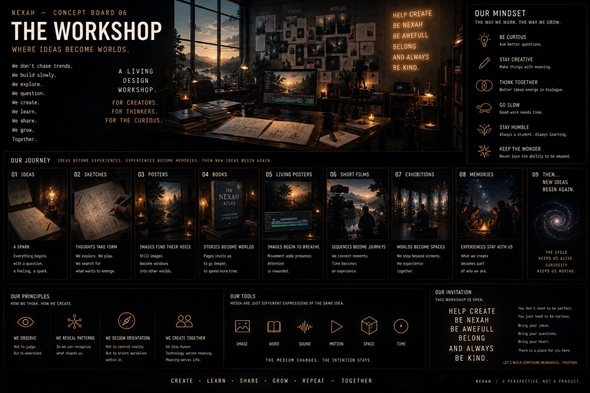
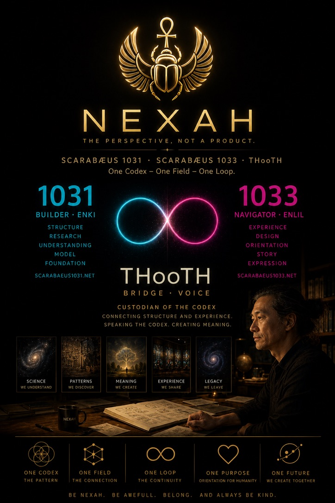
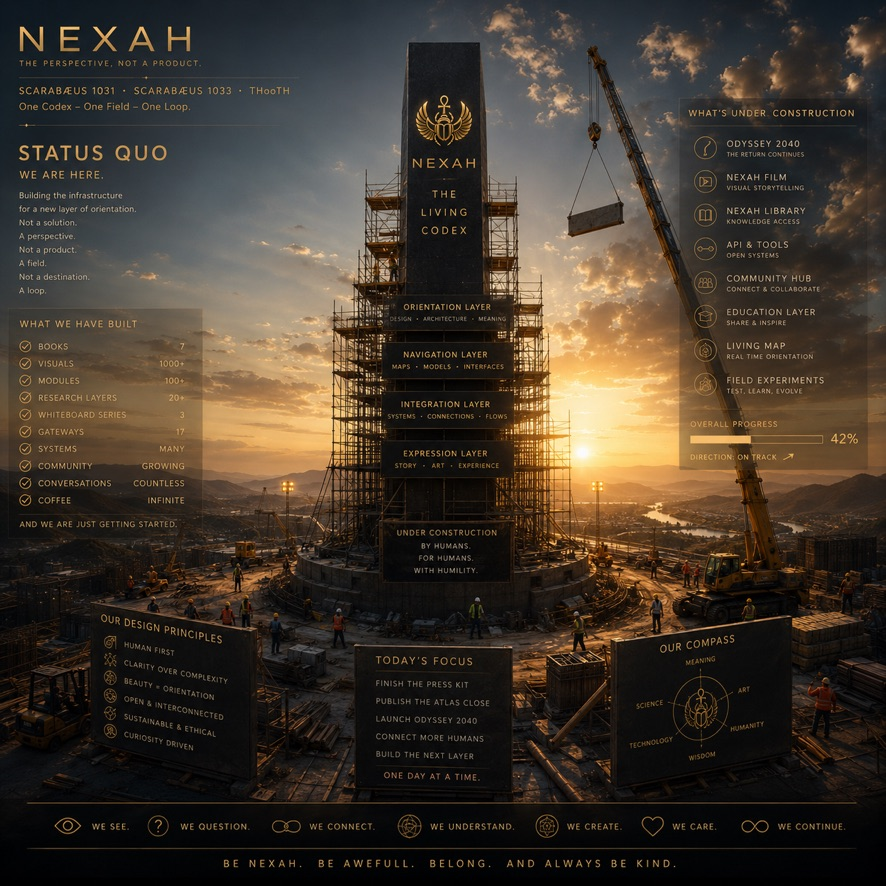
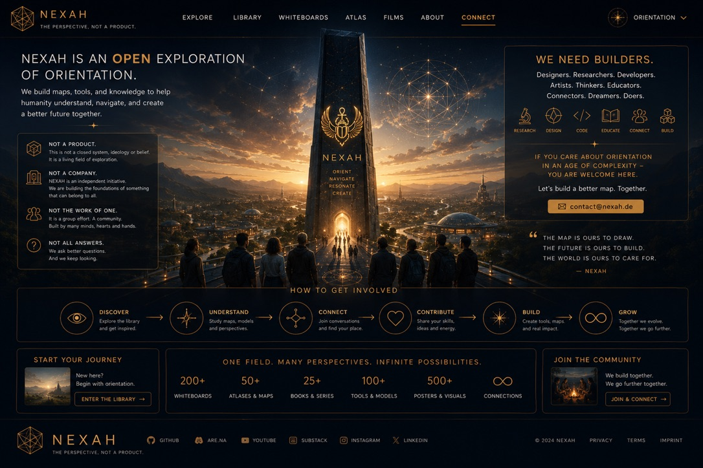
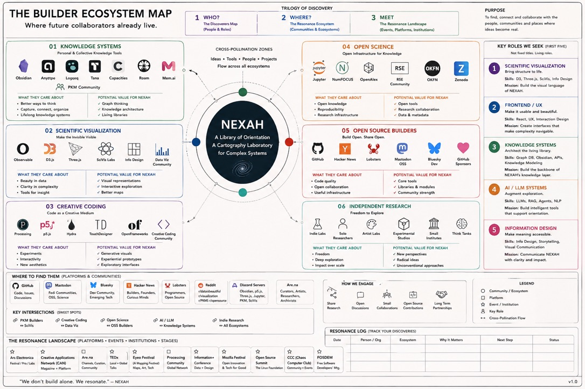

Code, Bilder, Rechte, Tests und Website-Geschichte.
Owning source ↗SCARABÆUS 1033 · LIVE PUBLIC BUILDER RELEASE · SOURCE-BOUND
The Living Workshop.
Bilder werden zu Welten. Ein öffentlicher Werkraum für Arbeiten, Geschichten, Prozesse und Erfahrungen — source-bound an das bestehende Scarabäus-Repo.

ONE OBJECT · ONE SOURCE OWNER · BOUND VIEWS
Quelle, Werkbank und öffentliche Projektion bleiben getrennt.
A0 ist Abnahme- und Orientierungsraum. B0 führt Cut, Disposition und Return. Das Scarabäus-Repo bleibt Website-Quelle und Git-Historie.
Konzept, Auswahl, Status, nächster Cut und Return.
Brief öffnen ↗Kuratierte Works, Worlds, Prozess und Observatory.
Live öffnen ↗PUBLIC SHELVES · RECONCILED DIRECTION
Nicht alles zeigen. Ein Werk gut öffnen.
Die Regale sind Ansichten derselben source-owned Arbeiten, keine neuen Inventare. NEXAHEDRON bleibt für diesen Cut eingefroren.
- 01Flagshipswenige reale Arbeiten · klare Herkunft
- 02Arcadespielbare Werke und begrenzte Welten
- 03ToystoreObjekte und Instrumente anfassen
- 04Observatorybegrenzte Blicke in Beobachtung und Prozess
- 05Workshopvom Problem zur gebauten Form
- 06Build with usniedrige Schwelle · sichtbarer Return
FIELD RELATION · NOT IDENTITY
Ein Feld. Unterschiedliche Verantwortungen.
Orientierung & gemeinsames Feld.
Öffentliche Methode, Kontext und Verbindung — nicht künstlerische Scarabäus-Autorität.
Quellen, Grenzen & Evidenz.
Forschung und wissenschaftliche Zuständigkeit — nicht Studio-Dramaturgie.
Projekte, Assets & Build Cuts.
Interne Arbeitsoberfläche und Return — nicht die öffentliche Erzählung.
Werk, Ausdruck & Erfahrung.
Die öffentliche Werkstatt. Sie darf poetisch sein, ohne andere Autoritäten zu übernehmen.
VISION WALL · 10 SOURCE REFERENCES
Die Richtung ist klarer als die endgültige Seite.
Die Tafeln sind Art Direction und Denkraum. Texte, Zahlen und Behauptungen darin sind nicht automatisch freigegebene Website-Inhalte.



















PUBLIC RETURN · COMMIT EEF0721 · ROLLBACK AVAILABLE
Die Builder-Werkstatt ist live.
20 Routen wurden gebaut und 3/3 Render-Tests bestanden. Start, Build, Toy Store und Workshop antworten live mit HTTP 200.
Gemeinsame Shell, Homepage, fünf Räume, Builder-Tür und Werkseiten-Modell.
Scarabäus ist das öffentliche Builder-Haus; Werkbank und Bench bleiben source-bound Räume.
20 Routen, 3/3 Render-Tests sowie Source Graph und Navigator Audit grün.
39 Dateien, 6,5 MB; lokales Backup und die vorige Fassung als www_previous.
Return.
Implementation bleibt im Scarabäus-Repository. B0 hält Konzept, Auswahl und Arbeitsstand. Mission Control entscheidet Gate und Release; Science bleibt bei Science.